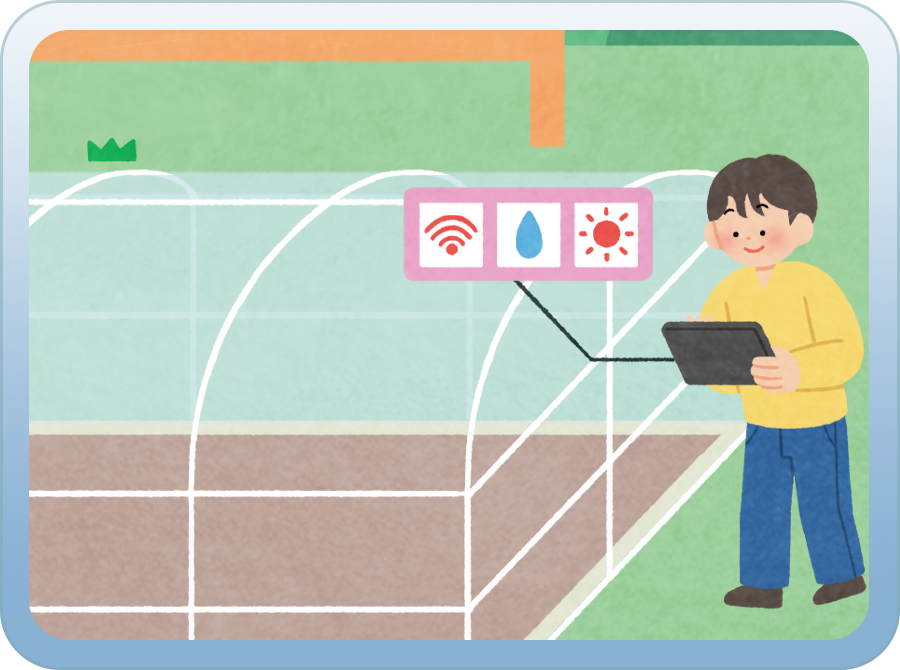
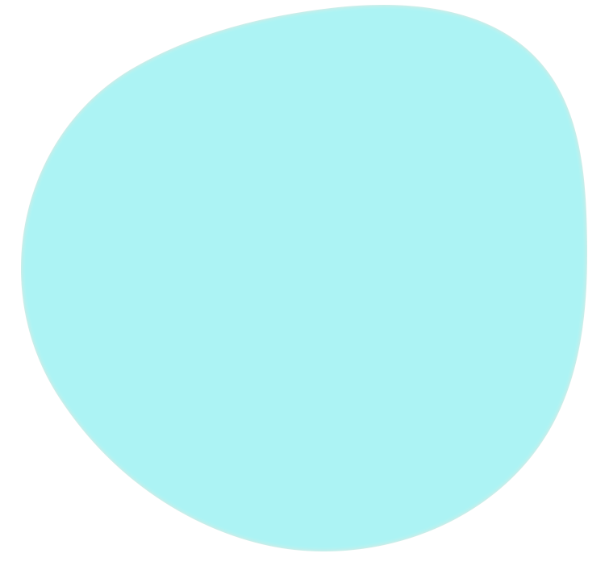
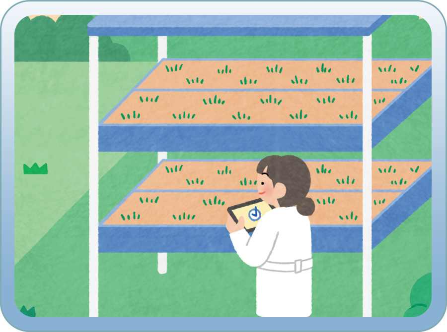
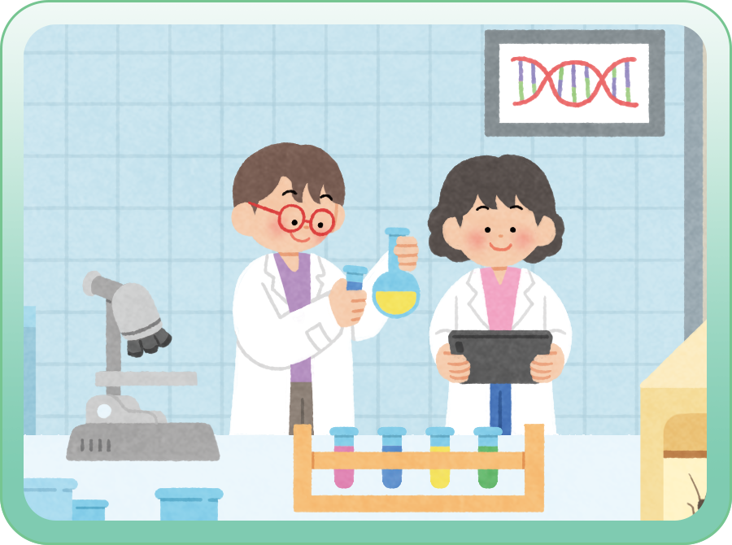
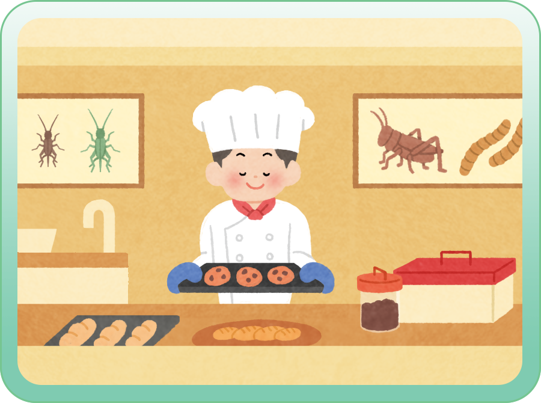
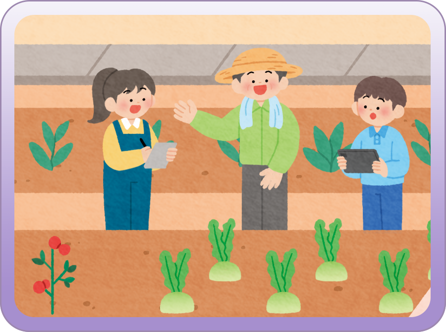
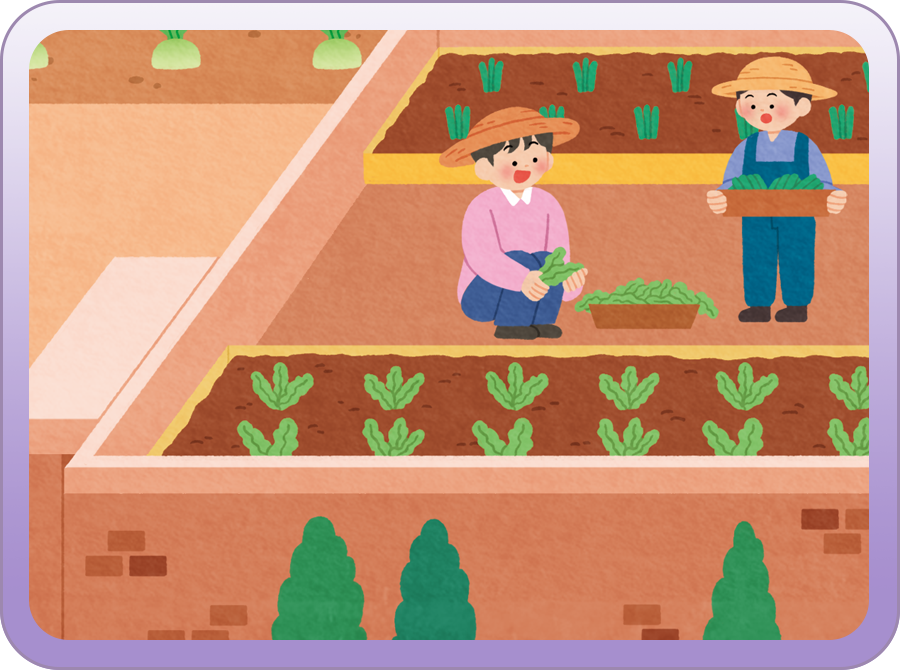
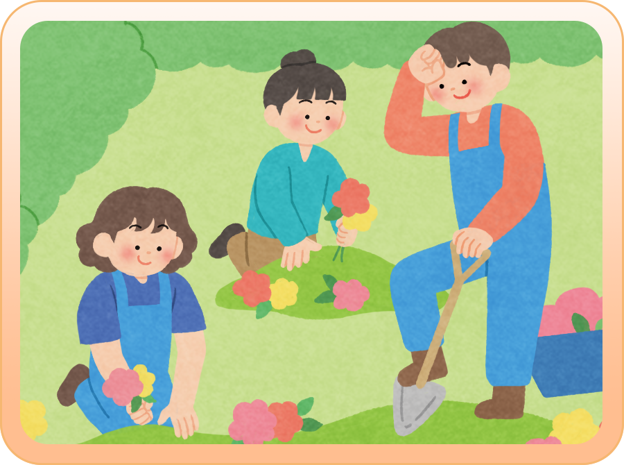
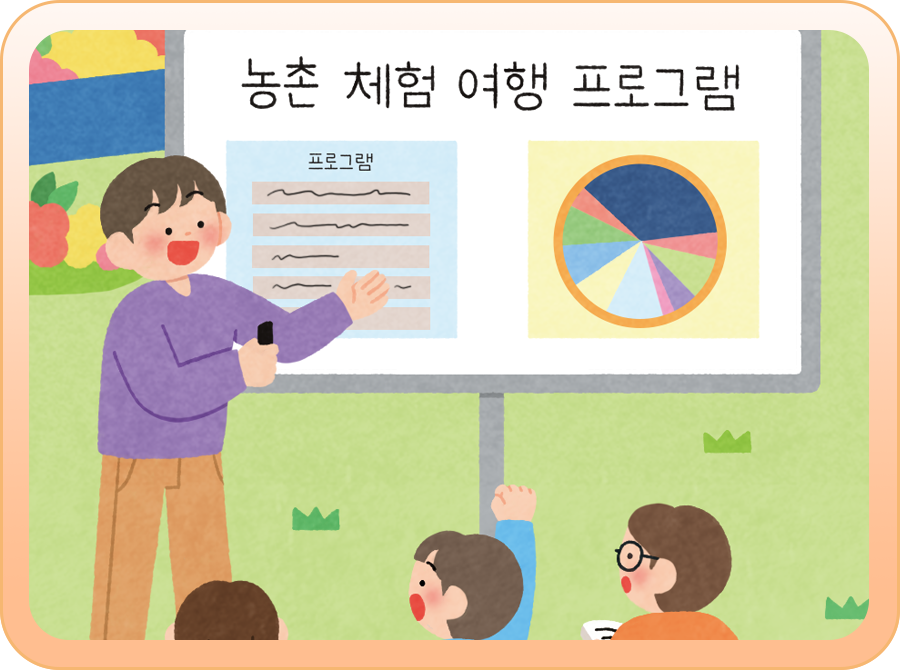

농업의 경제적 역할과 가치는 다양한
먹거리와 산업의 재료 등을 생산하여
경제적 부가 가치를 창출하고 일자리를
제공하는 것이에요. 관련된 직업을
알아볼까요?


스마트 농업 기술을 활용해
농작물과 가축을 효율적으로
관리해요.
농작물을 키우는 환경을
최적화하고 생산성을 높여요.

수직으로 쌓아 여러층에서
식물을 재배하는 수직 농장을
설계하고 운영 및 관리해요.
수직 농장에서 엘이디(LED)
조명과 수경 재배 등을
활용해 작물을 생산해요.
농업의 환경∙생태적 역할과 가치는 자연
환경을 보호하는 것이에요. 탄소 흡수, 생물
다양성 유지, 기온 조정 등을 통해 환경
보호에 기여해요. 관련된 직업을
알아볼까요?

동식물 종을 보존하기 위해
유전자 정보를 수집하고
분석해요.
작물, 가축의 개량이나 질병
예방을 위해 연구해요.

탄소 배출량이 많은 고기 대신
먹을 수 있는 곤충으로 식품을
개발하고 조리해요.
사람이 먹을 수 있는 곤충에
관한 정보를 구하고 곤충의
특성을 연구해요.
농업의 사회적 역할과 가치는 사회적
문제를 해결하는 것이에요. 지역 공동체
유지, 식량 안보 확보, 농촌 활성화 등을
통해 건강한 사회가 되는 데 기여합니다.
관련된 직업을 알아볼까요?

씨앗을 발아시키고 건강한
묘목을 생산하는 일을 해요.
묘목을 건강하게 키워
공급해요.

도시 공간에서 텃밭 조성,
옥상 농업 등 도시 농업을
기획하고 운영해요.
도시 농업의 확산을 위해
일해요.
농업의 문화적 역할과 가치는 전통문화와
아름다운 자연 경관을 유지하는
것이에요. 전통 음식, 지역 축제, 자연
경관 형성 등을 통해 고유한 농경 문화를
보존해요. 관련된 직업을 알아볼까요?

농업 활동을 활용해 몸과
마음을 치유하는 서비스를
제공해요.
치유 농업을 위한 환경을
조성하고 유지해요.

농촌 체험 및 농촌 여행
상품을 기획하고 개발해요.
농촌 체험 시설 및 관광 시설을
운영해요.